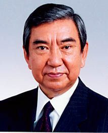

'고노담화'의 고노 요헤이 전 일 중의원 의장 별세… 향년 89세
일본군 위안부 동원의 강제성을 일본 정부가 처음 공식 인정한 1993년 '고노담화'의 주인공, 고노 요헤이 전 중의원 의장이 별세했다. 한국과 중국에서도 그의 유산을 기리는 반응이 이어졌다.
여년재 기자 · 2026.06.11
橋국제

경향신문 등에 따르면 고노 전 의장은 8일 89세를 일기로 별세했다. 1993년 관방장관으로서 위안부 모집·이송 과정의 강제성과 군의 관여를 인정하고 사죄와 반성을 표명한 담화를 발표했다.
광고 문의 · 300×250고노담화는 이후 한일 역사 문제 논의의 기준점이 됐다. 일본 내 보수 진영의 수정 시도가 반복될 때마다, 역대 일본 정부는 담화 계승의 입장을 공식적으로는 유지해 왔다.
그는 자민당 총재를 지내고도 총리에 오르지 못한 정치인이자, 중일 우호를 중시한 비둘기파 원로로도 기억된다. 중국 매체 環球網은 '이 정치가가 왜 추모받는가'라는 해설을 실었고, 한국 정부도 애도를 표했다.
역사 문제는 한중일과 화인 사회가 모두 당사자인 주제다. 華橋時報는 고인의 족적과 각국의 반응을 사실대로 기록한다.
출처·참고 (사실 확인용 — 본문은 직접 재작성)
· 경향신문
· 環球網
· 경향신문
· 環球網